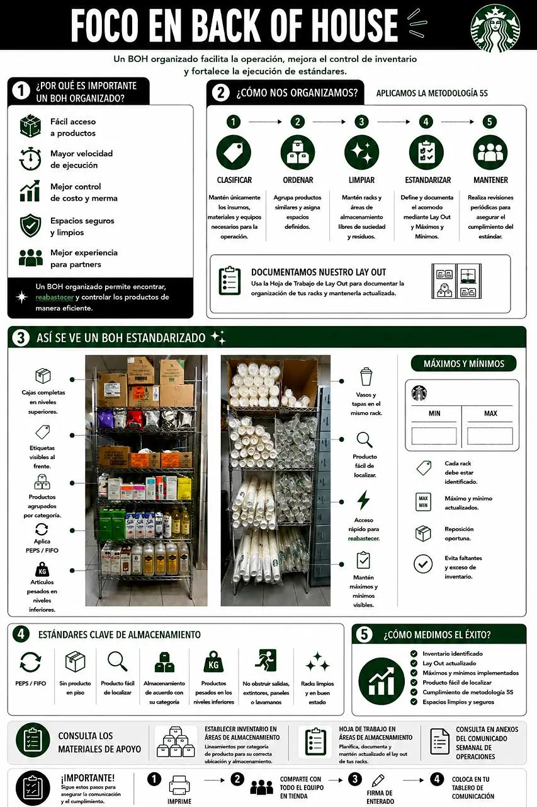

1 · Filtra
Define tienda, semanas y alcance antes de revisar.Ruta rápida · EtiquetasSigue los pasos de izquierda a derecha.
2 · Elige
Ingredientes disponibles
3 · Revisa
Vista previa de corte
Tienda-
Semanas-
Actualización-
Página 1 de 1
4
Confirma y exportaElige ingredientes para habilitar el PDF.
2 · Revisa
Consulta y validación por ingrediente
Sólo se muestran insumos con uso mayor a cero. El formato se controla una sola vez desde “Formato base”.
3A
Lista PDF0 filas visibles. No necesitas seleccionar.
3B
Etiquetas de rack0 elegidas. Primero toma lo visible.
| Sel. | Ingrediente / SAP | Categoría | #DIA | #SAP | Uso prom. | Mín. | Máx. | Estado |
|---|
2 · Captura
Foto de la estación
2 Foto completa3 Ubica números4 Compara y valida
Toma o adjunta la estaciónDespués arrastra cada número hasta el producto.
3 · Ubica
Insumos por ubicar
Arrastra un insumo a la foto. Después ajusta su número sobre la ubicación real.
Apoyo para validar la estación

Ver referencia BOH